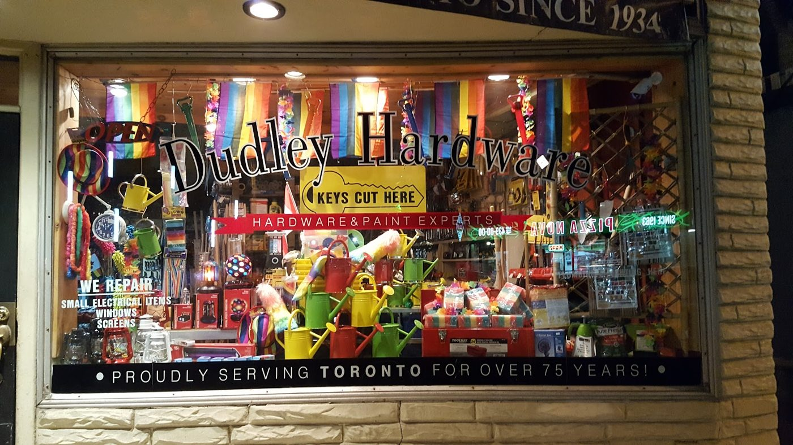

Hardware, paint & decor · Church-Wellesley, Toronto · Since 1934
The Village’s hardware store, since 1934.
Keys cut in minutes, the right screw (sold one at a time), paint matched and lamps rewired, plus friendly advice on whatever you’re fixing. Dudley’s has been on Church Street for more than 90 years.
- Keys cut fast
- Paint & supplies
- Lamp rewiring
- Advice that’s spot-on
What you’ll find
Hardware & keys
Screws (sold individually, Robertson head), anchors, hooks, plumbing bits and tools for small home repairs. Keys cut while you wait; one reviewer was in and out in under two minutes.
Paint & decor
Para paint, stains, finishes and craft paints, plus light bulbs and household goods. Reviewers say staff will help you pick the right bulb, and even talk it through on the phone first.
Repairs & advice
The window sign says they repair small electrical items, windows and screens, and reviewers have had vintage lamps and pendants rewired here. Staff will walk you through a fix step by step.
This list comes from the shop’s Google listing (hardware store, paint store, DIY shop), its window signs, its photos and its reviews. No prices are listed because the shop doesn’t publish a price list online. Call to check stock.
Our story
A Church Street fixture
Since 1934
Morris and Sid Dudley opened Dudley Hardware on Church Street in 1934, and John Dudley later took over. Steve Dawson started working at the store in 2001, later bought it and renamed it Dudley’s Hardware Paint & Decor. It is the oldest business on Church Street, and the laneway beside it is named Anvil Alley in its honour.
“Knowledgeable staff, great customer service, and exactly what you want from a local hardware store.”
Kareem, Google review. History from theBUZZ (June 2019) and the Church Wellesley Neighbourhood Association.
What customers say
4.4 ★ from 345 Google reviews (checked Nov 10, 2026). Quotes are word for word. Each one says where it was read: on the Google listing itself, or on a public page that copies reviews. Google shows only a handful of reviews without signing in, so some quotes come from a directory copy that doesn’t show reviewer names.
★★★★★
Absolutely incredible service! I needed a key copied and was in and out in less than two minutes. The staff was super friendly, efficient, and the new key works perfectly. Hands down the fastest and easiest key cutting experience I’ve had. Highly recommend!
★★★★★
Stopped by Dudley’s Hardware today because I desperately needed something for a job I was finishing in the area. My phone wasn’t working properly, so I couldn’t even look things up, but the customer service was excellent from the second I walked in.
The two gentlemen there wasted no time helping me find exactly what I needed. They were knowledgeable, efficient, and had me in and out in less than five minutes.
The store itself is a little tight and has that old school hardware store feel, but honestly, that doesn’t matter when the service is this good. Knowledgeable staff, great customer service, and exactly what you want from a local hardware store.
Definitely worth stopping by.
★★★★★
Super helpful staff! Helped me choose the right lightbulb, I was also able to speak with them over the phone before stopping by in person. Will definitely stop by again!
★★★★★
They are always helpful. I had a home project and the staff took their time figuring out what items would be best and then found a cheaper option! Really glad they are part of the community here.
★★★★★
A big shout-out to Dudley's Hardware on Church Street. My husband needed a piece of hardware to stabilize a dishwasher and the person working was most helpful. Great location and excellent service!
★★★★★
Good range of products. Staff were friendly and helpful.
★★★★★
The staff there always come in clutch. My bathroom door was locked from inside and the guy went out of his way to help me find the right tool for it.
★★★★★
Once again had what I needed for small home repairs. Better selection and prices than Canadian Tire.
★★★★★
I live nearby and have shopped here about a couple dozen times over the years. The staff here are a bit gruff (maybe gruff is too harsh a word? Reserved? Stoic?), but they're mostly very polite. What matters is they always greet you at the door, and they always approach you to help you with what you need, no matter what it is. Their advice has always been spot-on. No other hardware store I've ever gone to had staff that ready, willing and able to help. I love that they sell screws individually and all their screws are Robertson (🔲) too, cuz I'm sick of stripping or camming out on Phillips…
★★★★★
I am convinced this is the best hardware shop in the city. Not only are the staff kind they are knowledgeable and inventive. I've had many vintage and antique lamps/ pendants rewired here. They never fail to come up with a solution to all my lighting needs. Fiona
★★★★★
I have not ever had a bad experience here. Not only have the staff been super helpful and polite, they take the time to find specific solutions for my concerns and then take the time to detail a step-by-step process for the fix! I know I could get the same products on Amazon or something, but I would have no idea if what I would be purchasing was what I actually need, let alone how to go about it. For a home project novice like me, it's the personalized and patient service that makes all the difference. Thanks again to Dudley's staff for helping me with my DIY handheld sprayer that has saved…
★★★★★
Love Dudley’s Hardware! Such a great small business to support. They have a huge selection for a this small location. They have a great seasonal section - tons of gardening and lawn care items at great prices. The staff are friendly and helpful! Check this place out.
In the shop
Real photos from Dudley's Hardware’s public Google listing and its customers’ reviews. Tap to enlarge.
Visit the shop
511 Church St
Toronto, ON M4Y 2C9
| Monday | 10 a.m.–6 p.m. |
|---|---|
| Tuesday | 10 a.m.–6 p.m. |
| Wednesday | 10 a.m.–6 p.m. |
| Thursday | 10 a.m.–6 p.m. |
| Friday | 10 a.m.–6 p.m. |
| Saturday | 10 a.m.–6 p.m. |
| Sunday | 11 a.m.–5 p.m. |
These are the hours on Google today (Yelp shows the same). One directory lists Sunday as noon to 5 p.m., so call ahead if you’re coming early on a Sunday. Follow the shop on Facebook.